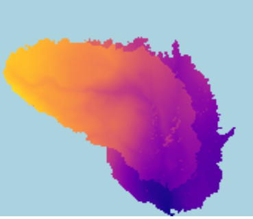
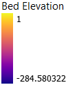

Higher bed elevation (close to 1) portions of the "Spruce 1" mesh would have burned more severly in the 2017 lolo peak fire.
Lolo Peak Fire Burn Index. (The blue box outline corresponds to the blue box outline of the mesh to the right)
"Spruce 1" 2d mesh showing bed elevation in a section of lolo forest


| High intensity |
| Moderate intensity |
| Low intensity |
| Unburned to Low |
Data Sources: https://www.mtbs.gov/viewer/?region=conus
https://cloud.pix4d.com/dataset/537853/model